BERRYSCAPE
Productive Landscape in Westwood, MA
The project responds to disrupted ecosystems along the Neponset River by repurposing the site into a productive berry farm. Using Massachusetts’ berry-farming tradition as a restoration strategy, water is reintroduced to support both ecological functions and seasonal berry production, guided by topography and phenology. Three linear ecological corridors link agroecosystems to upland forests and University Station.
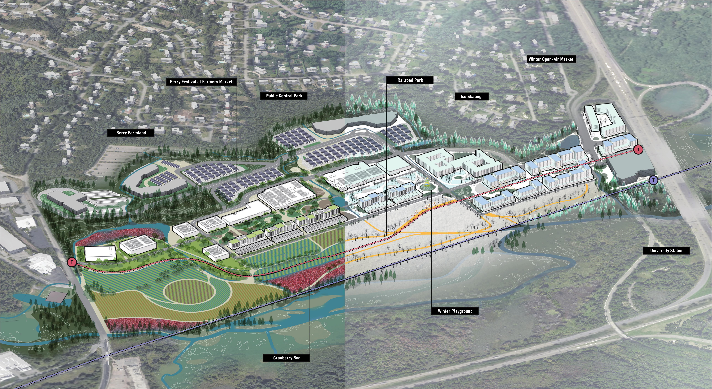
Site Environmental Conditions
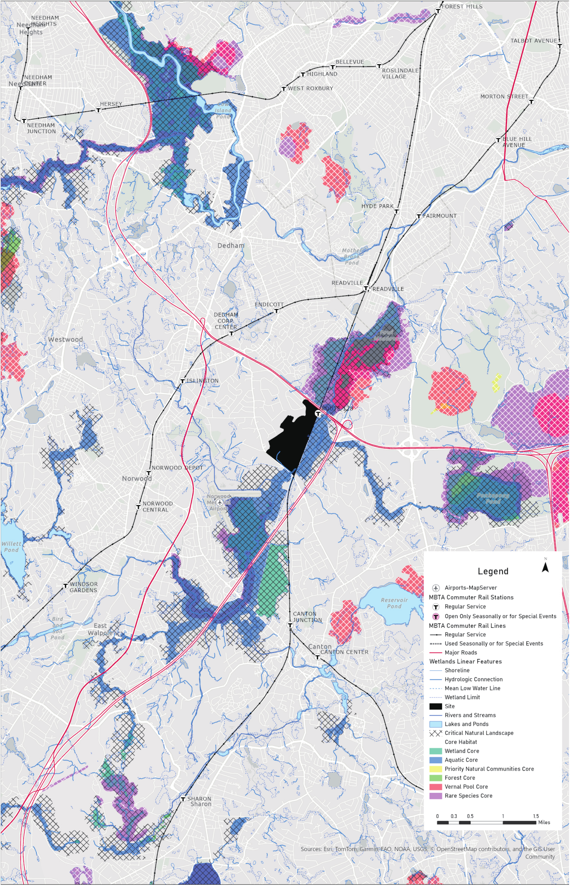
Westwood is situated within a network of critical landscapes, including forests, wildlife habitats, and the Neponset River wetlands. However, the existing University Station development disrupts this ecological system and remains significantly underutilized.
Restoring the Landscape
The primary goal of the project is to restore the landscape while redefining its role within the broader ecological system. Through hydrological analysis, the project reintroduces water into the site by breaking down large parking lots and oversized buildings, creating new opportunities for activation and diverse land uses.
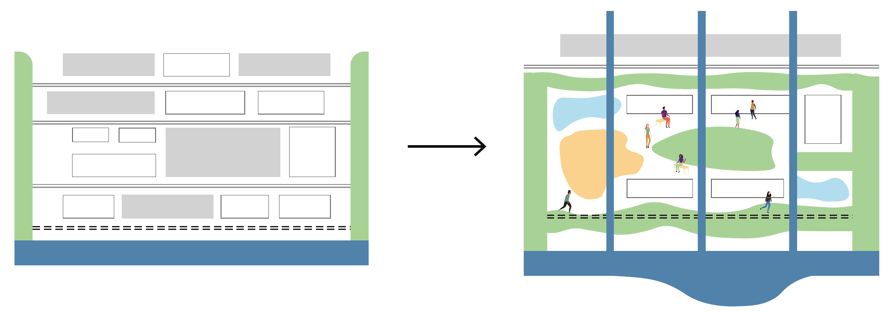
Hydrology Strategy
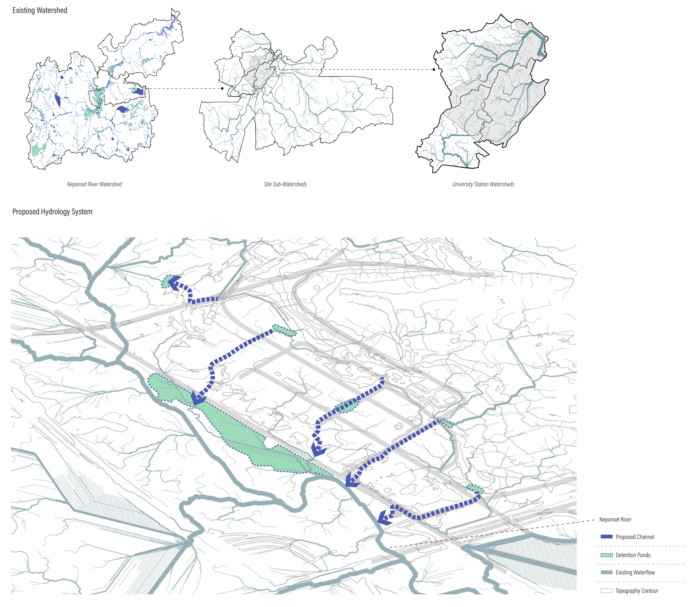
Recultivating the Land
Drawing on Massachusetts’ agricultural heritage, the project restores the land for berry cultivation. The farm functions not only as a productive landscape but also as a cultural infrastructure that reconnects the site to regional history.
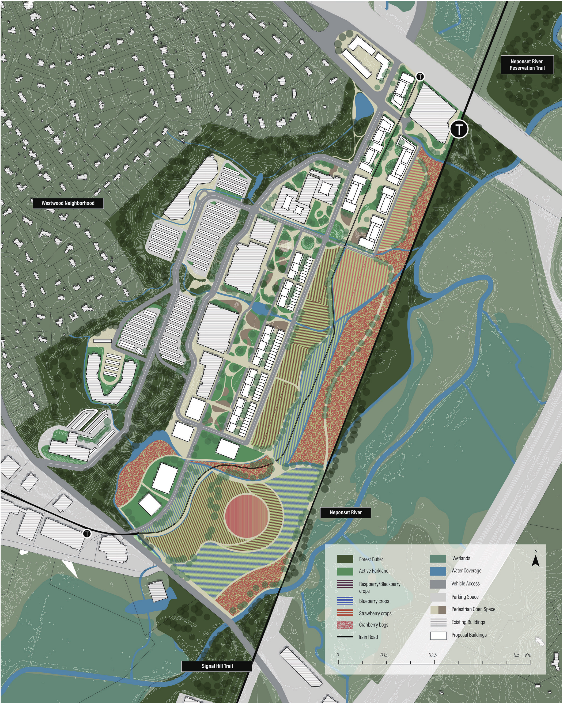
Urban Strategies
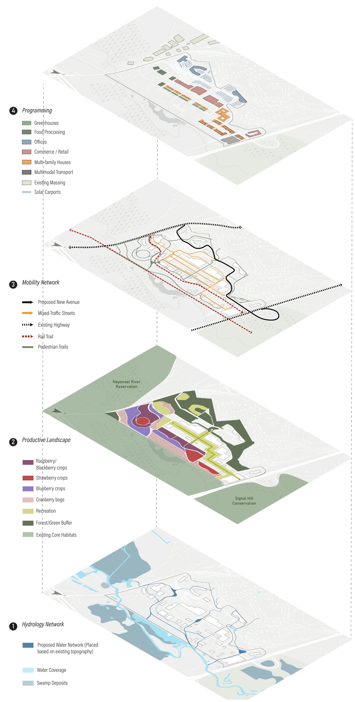
Project Phasing
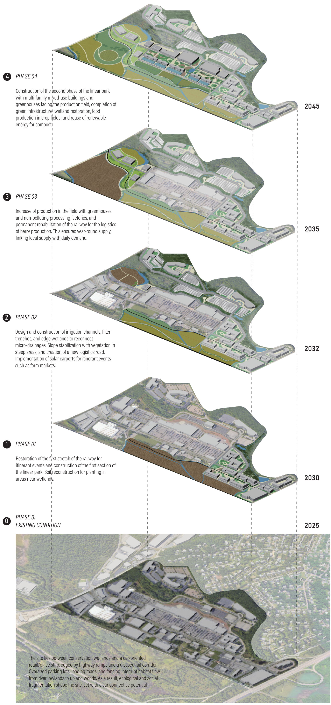
Planting Berries
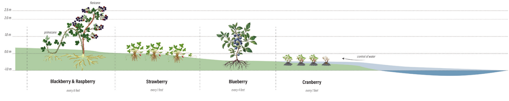
Reimagining Typologies for Farm–Suburban Living
Building Typologies
The project proposes a live–farm building typology that accommodates new workers without displacing agricultural activity. By combining housing and farming within a single system, the typology reinforces everyday engagement between residents and the productive landscape.
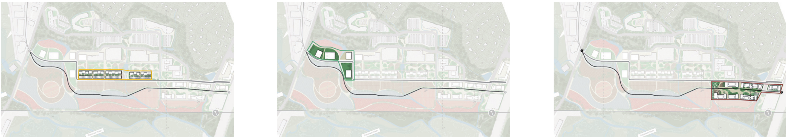
Open Space Typologies
To ensure the new landscape remains usable year-round, the project introduces a set of open space typologies that allow each part of the public realm to be multifunctional. These spaces support diverse public uses while reinforcing long-term environmental sustainability.
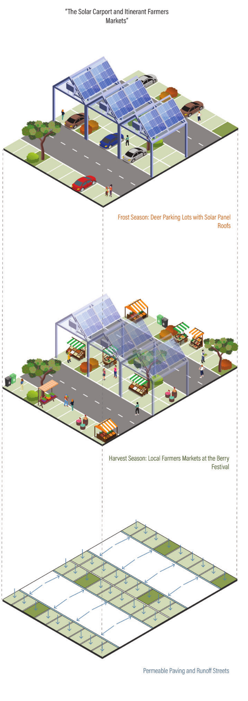
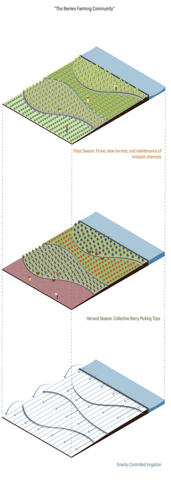
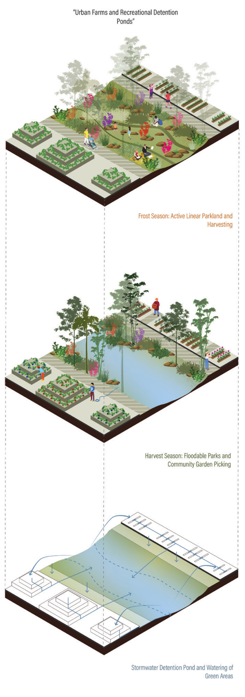
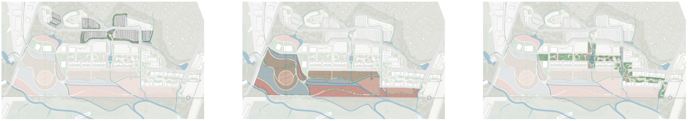
Transition within Site
Due to the site’s steep topography and diverse building functions, the project analyzes sectional transitions between offices, retail, housing, and farms. This study informs a framework that seamlessly integrates these varied conditions into a cohesive urban experience.
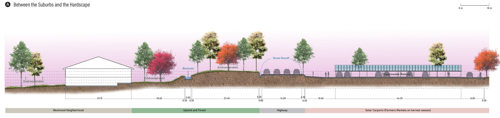
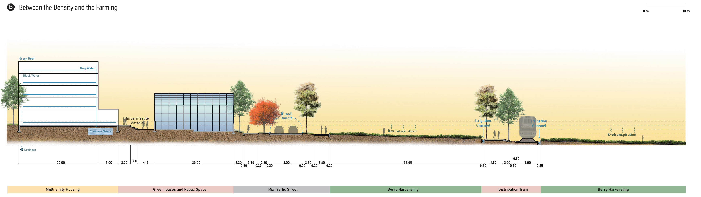
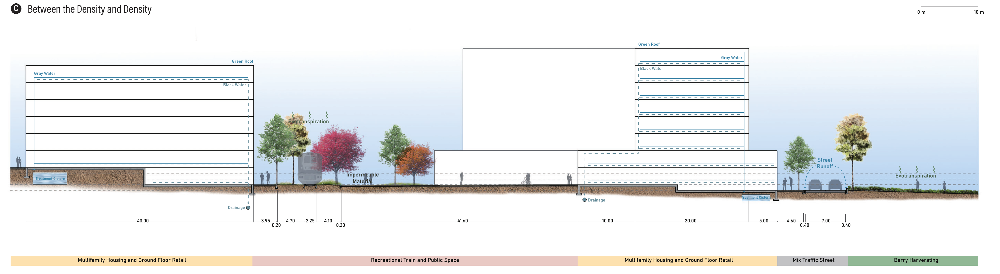
Physical Model
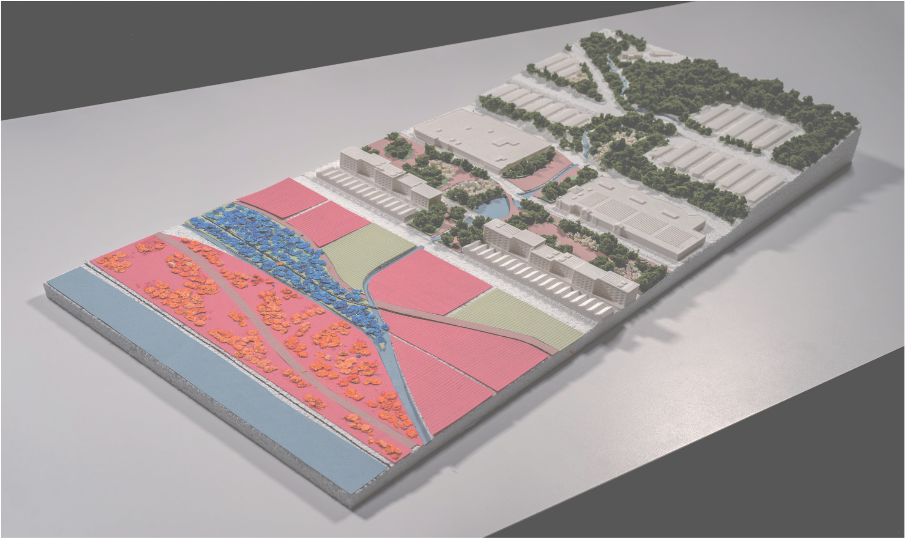